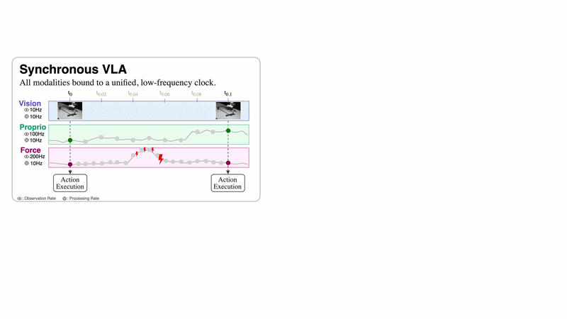
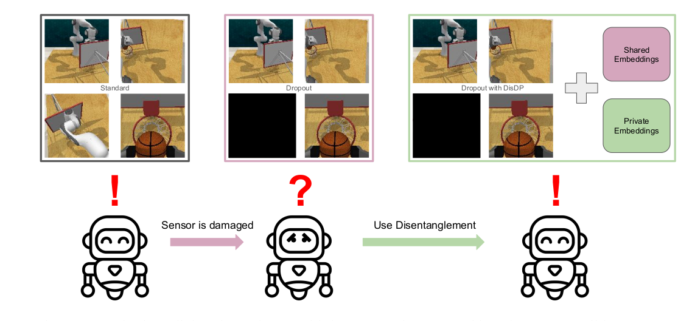
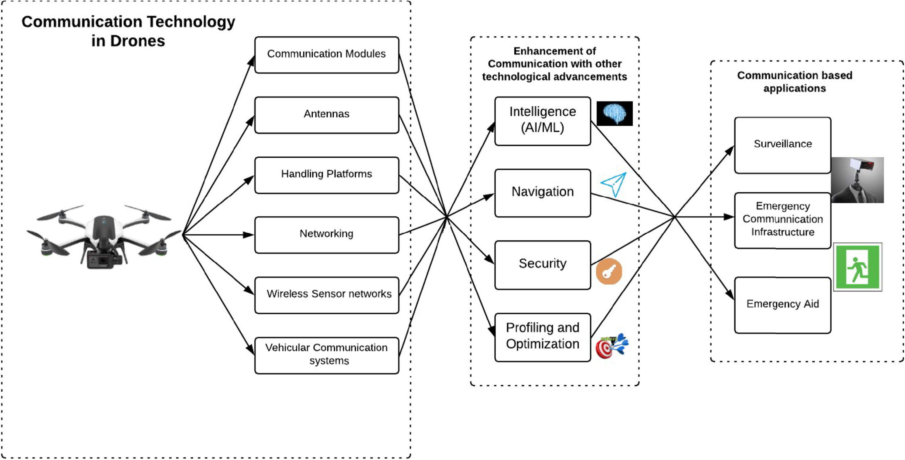
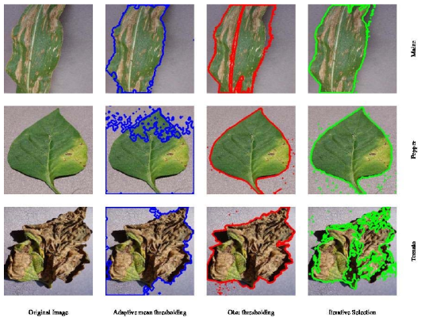

|
I am a PhD student in the Intuitive Robots Lab (IRL) at the Karlsruhe Institute of Technology (KIT), Germany supervised by Rudolf Lioutikov My research focuses on Learning robust policies from multiple modalities for robot manipulation tasks. Previously, I obtained my Master Degree in Embedded Systems(Computer Science) at the Saarland University where I wrote my thesis at Max Planck Institute supervised by Vladislav Golyanik. Email / CV / Google Scholar / Github / LinkedIn |

|
My research focuses on developing robust robot policies that can operate reliably in complex, real-world environments by leveraging multiple sensor modalities, such as vision, force, tactile, and language. I aim to build intelligent embodied agents that learn fine grained manipulation skills to perform a given task. This includes designing models adapting to sensor failures, noise, or incomplete observations, thereby improving resilience and reliability. |

Pankhuri Vanjani*, Mostafa Hatab*, Can Mizrakli*, Vaisakh Shaj, Zhuoyue Li, Moritz Reuss, Rudolf Lioutikov arXiv preprint, 2026 Project Page / arXiv Memory-dependent manipulation requires robots to make decisions using information that is no longer available to their current sensors, such as recalling an earlier visual cue, tracking task progress, counting repeated events, or estimating elapsed time. We present ReCAT, a language-conditioned policy with structured recurrent memory. An instruction-conditioned encoder forms features from the current observation. A recurrent memory integrates the observation stream through Mamba-2 layers and one causal attention layer. A flow-matching Transformer decoder reads the current and the historical representation through separate cross-attention in every block. ReCAT reaches 95.3% average success on LIBERO and 62.4% on RMBench, with the best or tied-best result on six of nine tasks. On three real-robot tasks probing spatial recall, event counting, and interval timing, the best ReCAT variant reaches 66.7% average success, against 8.3% for the strongest short-history baseline. Controlled comparisons within ReCAT show that the observation encoder and every-block memory conditioning are needed for this performance. They also show that update rules developed for efficient sequence modeling behave differently as robot memory: additive updates have the highest observed success on counting and timing, and delta-rule updates on spatial recall. * Core contributors |
|
 Pankhuri Vanjani, Zhuoyue Li, Jakub Suliga, Moritz Reuss, Gianluca Geraci, Xinkai Jiang, Rudolf Lioutikov Conference on Robot Learning (CoRL), 2026 From Perception to Action: Representation-Centric Robot Autonomy, RSS 2025 Workshop Diffusion for Robot Learning: From Generation to Action, RSS 2025 Workshop — ⭐ Spotlight Semantic Reasoning and Goal Understanding in Robotics, RSS 2025 Workshop Planning and Control with Imperfect Sensors and Perception, RSS 2025 Workshop Project Page / arXiv Vision-language-action (VLA) models inherit a shared synchronous clock from vision-language pretraining, processing every input at one rate. This is misaligned with physical interaction, where a high-frequency modality changes at hundreds of hertz, vision evolves more slowly, and language stays constant across an episode. A synchronous VLA oversamples slow modalities, undersamples fast ones, and caps action generation at the lowest effective frequency. We hypothesize that decoupling temporal processing per modality, letting each update and retain information at its own sensor rate, yields stronger representations and more robust control. We present Decoupled Asynchronous Multimodal Vision Language Action (DAM-VLA), which maintains per-modality latent buffers refreshed at sensor rates and read continuously by the action head, integrating new high-frequency modalities through gated cross-attention that leaves the pretrained backbone intact. Across seven contact-rich real-world manipulation tasks, DAMVLA more than doubles the average success rate of the strongest synchronous baseline (95.2% vs. 40.95%) while sustaining smooth, reactive 100 Hz control |
|
 Pankhuri Vanjani, Paul Mattes, Xiaogang Jia, Vedant Dave, Rudolf Lioutikov Reinforcement Learning Conference (RLC) 2025 Extended Abstract at the German Robotics Conference (GRC) 2025 Workshop on Reliable Robotics · Workshop on Learned Robot Representations ⭐ Spotlight Talk at R3: Reasoning for Robust Robot Manipulation in the Open World OpenReviewnet This work introduces Disentangled Diffusion Policy (DisDP), an Imitation Learning (IL) method that enhances robustness by integrating multi-view disentanglement into diffusionbased policies. For robots to be deployed on a large scale across various applications they have to be robust against different perturbations, including sensor noise, complete sensor dropout and environmental variations. Existing IL methods struggle to generalize under such conditions, as they typically assume consistent, noise-free inputs. To address this limitation, DisDP structures sensory inputs into shared and private representations, preserving task-relevant global features while retaining distinct details from individual sensors. Additionally, Disentangled Behavior Cloning (DisBC) is introduced, a disentangled Behavior Cloning (BC) policy, to demonstrate the general applicance of disentanglement for IL. This structured representation improves resilience against sensor dropouts and perturbations. Evaluations on The Colosseum and Libero benchmarks demonstrate that disentangled policies achieve better performance in general and exhibit greater robustness to any perturbations compared to their baseline policies. |
|
Seongjin Bien, Débora Oliveira Makowski, Carlo Kneissl, Reihaneh Mirjalili, Pankhuri Vanjani, Rudolf Lioutikov, Gitta Kutyniok, Florian Walter, Wolfram Burgard arXiv preprint, 2026 Project Page / arXiv / Dataset Tactile information is essential for contact-rich manipulation tasks in robotics. Vision-based tactile sensors make it particularly easy to design end-to-end manipulation policies with tactile sensing, as they enable the use of existing encoders from computer vision. However, this has led to a huge variety of architectures, training datasets, and evaluation protocols, making it difficult to determine which design choices best encode touch. In this work, we address this gap and present a comprehensive study of tactile encoders and fusion strategies across various contact-rich manipulation tasks in real-world experiments. To enable a controlled comparison, we train and evaluate all models under the same pipeline and experimental setup, comprising more than 2000 real-world rollouts. Our results go beyond other studies that only compare simulation performance, which does not necessarily translate to real-world settings, where large-scale evaluations are needed to obtain reliable statistics. Our key finding is that there is no universally optimal representation or fusion strategy for encoding visual-tactile. Instead, the best encoder backbone and fusion scheme depend strongly on the task. |
|
 Journal of Network and Computer Applications, 2020 sciencedirect This paper aims at providing insights into the latest UAV (Unmanned Aerial Vehicle) communication technologies through investigation of suitable task modules, antennas, resource handling platforms, and network architectures. Additionally, we explore techniques such as machine learning and path planning to enhance existing drone communication methods |
|
 International Journal of Social and Humanistic Computing, 2019 researchgate This paper presents improved image processing algorithms for detecting leaf infections and uses k-means clustering for agricultural field classification in a heterogeneous robotic system. The approach leverages a dataset of 3,150 crop disease images across three crop types, aiming to enable early disease detection and support mixed cropping via smart farming technologies. |
|
The website is based on the code from source code! |